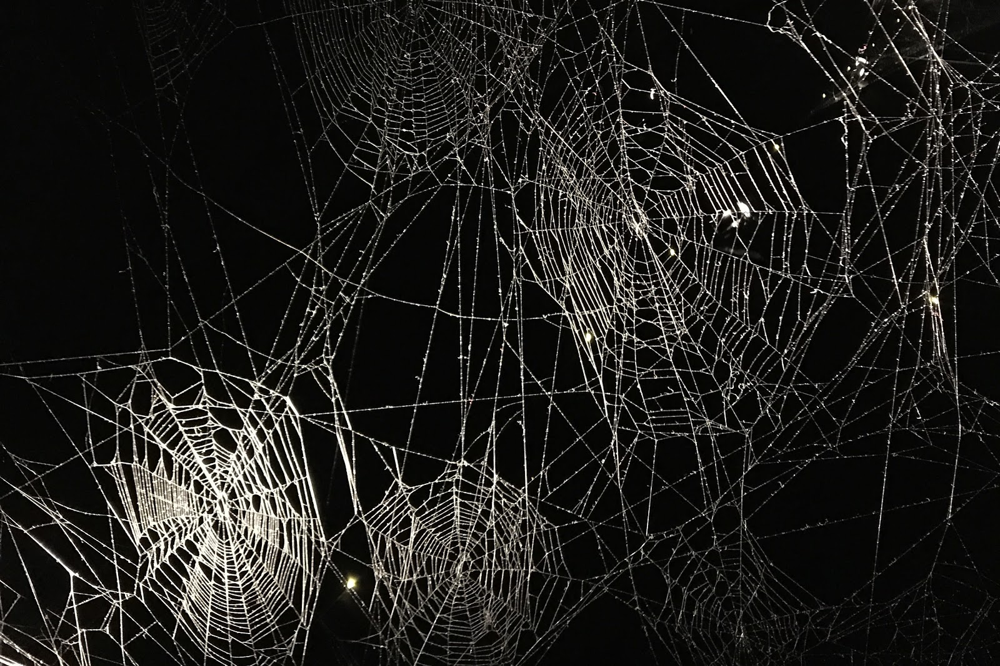

Lecturas e intervenciones
Malén Denis recitando poesía a viva voz en la Abadía San Benito de Palermo para la apertura del FilBA 2016
Además de sus publicaciones en papel, Malén Denis formó parte de diversos festivales e intervenciones performáticas, entre ellos de la sección Poesía y Música del Festival Ciudad Emergente (CCR, 2011), Ciclo Alrededor curado por Rosario Bléfari (Museo del Libro y de la Lengua, 2015), Filba (2016), ArteBA (2016), La noche de las librerías (2017), Los Angeles Times Festival of Books (2018), Coordenadas poéticas (CCR, 2018), Festival Latino Poets de la Ciudad de New York (2019), entre otros.
Recibiendo un reconocimiento por parte del Consulado de El Salvador en New York
En el 2017 Realizó junto con Gael Policano Rossi la segunda temporada de La onda encantada en el Teatro Sarmiento, bajo el ala de Vivi Tellas, un encuentro para escuchar y hacer poesía invocando las energías de los sueños. Para las diversas funciones Gael y Malén prepararon textos para ser declamados en el teatro, algunos propios, pero, en su gran mayoría de otrxs autores, entre ellos Cecilia Pavón, Marina Alessio, Osvaldo Lamborghini y Björk.
Malén Denis leyendo poesía en La onda Encantada (Teatro Sarmiento)
En agosto del 2018 Malén Denis fue invitada por el Museo de Arte Moderno de Buenos Aires a producir un texto original a ser leído en el centro de la instalación colosal de Tomás Saraceno “Cómo atrapar el universo en una tela de araña”. Los textos fueron leídos para un público rotativo en tres funciones por una única fecha desde el centro de una estructura tejida por arañas reales.
De “¿Cómo atrapar el universo en una tela de araña?” de Tomás Saraceno
En mayo 2020, realizó una intervención virtual para la Universidad Nacional de México junto a Doreen Rios (minipixel). Un jam de escritura texto-código en vivo bajo un tema en común. Pantallas compartidas con los usuarios, los resultados, los procesos y las variantes de sus escrituras comparten un mismo tiempo de acción y, para nosotros, de lectura.